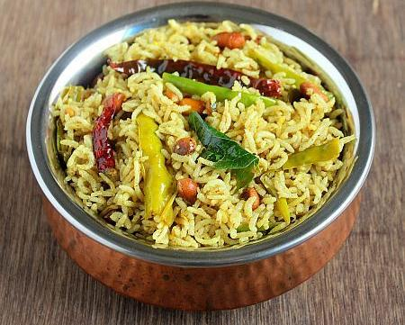

Chintapandu Pulihora

DESCRIPTION:
Chintapandu Pulihora and Nimmakaya (Lemon) rice are the most common among the rice varieties.
Though the process for lemon rice is similarly followed by all, pulihora recipe changes from home to home.
My mom used to make a special Pulihora Gujju (Tamarind Paste) and when she wants to make pulihora all she needs to do is to mix the rice with the Pulihora Gujju.
And Voila you have a delicious bowl of lip smacking tangy Chintapandu Pulihora to devour.
INGREDIENTS:
- 1 cup Sona masura rice(or equivalent)
- 1 big lemon size Tamarind
- 3-4 tbsp Groundnuts
- 2 tsp grated Jaggery(optional)
- ½ tsp Mustard seeds
- 2 tbsp Chana dal
- 1 tbsp Urad dal
- 3-4 dry Red chillies
- 5-6 Green chillies slit
- 1 tsp Turmeric powder
- a pinch of Asafoetida
- a sprig of Curry leaves
- 2-3 tbsp Oil
- Salt to taste
STEPS:
- Wash the rice and add 2 cups of water and soak it for 15-20 mins.
Pressure cook the rice or cook it in electric rice cooker or how ever you usually do.
- Once the rice is done,cool it completely by spreading it over wide plate smear with 1 tsp of oil and ½ tsp turmeric powder.
- Soak tamarind in ¼ cup of water for 10-15 mins or microwave the tamarind mixture for 1 min.Microwave method is quite quick when u have lack of time.
After it is cooled down remove the pulp and add grated jaggery and mix well until it is melted completely.
- In a kadai heat oil and crackle the mustard seeds,add groundnuts and fry until they turn slight red.
Add chana dal,urad dal,red chillies,green chillies and fry for a couple of minutes until done.
- Add curry leaves,asafoetida and turmeric powder and fry for a minute and then add tamarind pulp mixture and mix until the mixture thickens completely for at least 5-6 mins.
Add enough salt to it and mix.
- Now remove it from the stove and let it cool a bit and reserve some mixture and pour the remaining mixture over the cooled rice and mix properly until everything is well blended.
Now check the taste of it and add more tamarind mixture or salt according to your taste.
It should taste sour when you taste it as the sourness will reduce and blend well along with the time it sits.
- Let it sit for 2-3 hrs before serving.
- Serve it at room temperature.